Java Controls

In this lab, you are going to build and
run sample applications that
uses control structure of the Java programming language such as while
loop or if/else.
Expected duration: 60 minutes


Change Log
- Jan. 24th, 2007: Created
- Jan. 28th, 2007: Missing sample codes are added, Homework subject
line is fixed.
- Feb. 25th, 2008: Minor change is made
- April 17th, 2008: JDK 6 is recommened.
- July 13th, 2010: Updated with NetBeans 6.9, Lab zip file name is
changed (Sang Shin)
Lab Exercises
Exercise 1: if/else control structure
In this exercise, you will learn
how to write a Java program that uses if/else control structure.
(1.1)
Build and run a Java program that uses if/else control structure
1. Open MyGradesProject NetBeans
project.
- Clock Open Project button or select File->Open Project (Ctrl+Shift+O).
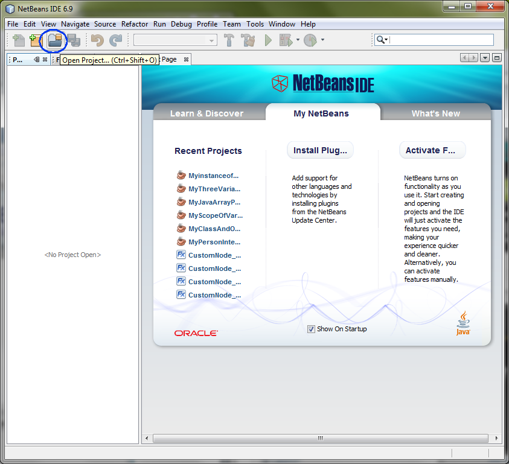
- Observe Open Project
dialog box appears.
- Browse down to <LAB_UNZIPPED_DIRECTORY>/javase_control/samples
directory.
- Windows: If you unzipped the hands-on lab zip file, 1034_javase_control.zip, under C:\
directory, the directory to which you want
to browse down should be C:\javase_control\samples.
- Solaris/Linux: If you unzipped the 1034_javase_control.zip
file under $HOME
directory, the directory to which you want
to browse down should be $HOME/javase_control/samples.
- Select MyGradesProject.
- Click Open Project.
(Figure-1.10 below)
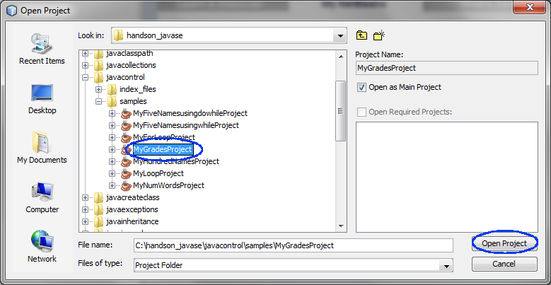
Figure-1.10: Open MyGradesProject
- Observe that the MyGradesProject
project node is displayed
under Projects pane of the
NetBeans IDE.
2. Study the
Grades.java which uses
if/else control structure,
- Expand MyGradesProject->Source
Packages.
- Double click Grades.java
to open it in the editor window.
- Study how if/else control structure is used, whose code fragment
is highlighted in bold font in Code-1.11 below.
import javax.swing.JOptionPane;
public class Grades {
public static void main(String[] args) {
int mathGrade = 0;
int historyGrade = 0;
int scienceGrade = 0;
double average = 0;
mathGrade =
Integer.parseInt(JOptionPane.showInputDialog("Enter math grade between
0 and 100!"));
historyGrade =
Integer.parseInt(JOptionPane.showInputDialog("Enter history grade
between 0 and 100!"));
scienceGrade =
Integer.parseInt(JOptionPane.showInputDialog("Enter science grade
between 0 and 100!"));
// Compute average
average =
(mathGrade+historyGrade+scienceGrade)/3;
// Perform if & else control
if (average >= 60){
JOptionPane.showMessageDialog(null, "Good job! Your average is " +
average);
} else{
JOptionPane.showMessageDialog(null, "You need to do better! Your
average is " + average);
}
}
}
|
Code-1.11: Grades.java
3. Build and run the program
- Right click MyGradesProject and
select Run.
- Enter math, history, and science grades and see the result.
(Figure-1.12, Figure-1.13, Figure-1.14, Figure-1.15 below)
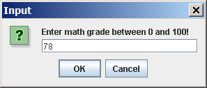
Figure-1.12: Enter math grade dialog box
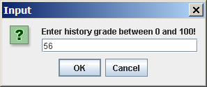
Figure-1.13: Enter history grade dialog box
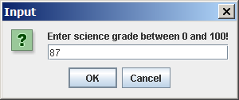
Figure-1.14: Enter science grade dialog box
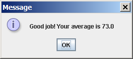
Figure-1.15: Computing average and display different message using
if/else
4. (For your own exercise - this is not a homework) Modify the
Grades.java as following:
- If the average is greater than 90 (average > 90), display "You
worked too hard! Your average is xx.0."
- If the average is greater than 50 (average > 50) and less than
or equal to 90 (average <= 90), display "You did OK! Your
average is xx.0."
- If the average is less than or equal to 50 (average <= 50),
display "You need to do some work! Your average is xx.0."
return to top of the exercise
(1.2)
Build and run another Java program that uses if/else control structure
1. Open MyNumWordsProject NetBeans
project.
- Select File->Open Project (Ctrl+Shift+O). The Open Project dialog box appears.
- Browse down to <LAB_UNZIPPED_DIRECTORY>/javase_control/samples
directory.
- Select MyNumWordsProject.
- Click Open Project.
- Observe that the MyNumWordsProject
project node is displayed
under Projects pane of the
NetBeans IDE.
2. Study the
NumWords.java
which uses
if/else control structure,
- Expand MyNumWordsProject->Source
Packages.
- Double click NumWords.java
to open it in the editor window.
- Study how if/else control structure is used, whose code fragment
is highlighted in bold font in Code-1.21 below.
import javax.swing.JOptionPane;
public class NumWords {
/** Creates a new instance of NumWords */
public NumWords() {
}
/**
* @param args the command line arguments
*/
public static void main(String[] args) {
String msg = "";
int input = 0;
// Get the input string
input =
Integer.parseInt(JOptionPane.showInputDialog
("Enter number between 1 to 10"));
// Set msg variable to the string
equivalent of input
if(input == 1) msg = "one";
else if(input == 2) msg = "two";
else if(input == 3) msg = "three";
else if(input == 4) msg = "four";
else if(input == 5) msg = "five";
else if(input == 6) msg = "six";
else if(input == 7) msg = "seven";
else if(input == 8) msg = "eight";
else if(input == 9) msg = "nine";
else if(input == 10) msg = "ten";
else msg =
"Invalid number";
// Display the number in
words if with in range
JOptionPane.showMessageDialog(null,msg);
}
}
|
Code-1.21: NumWords.java
3. Build and run the program
- Right click MyNumWordsProject and
select Run.
- Enter a number and click OK. (Figure-1.22 below)
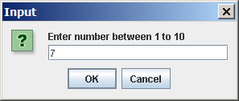
Figure-1.22: Enter a number
Summary
In this exercise, you learned how to
if/else control structure of the Java programming language.
Return
to the top
Exercise 2: for loop
In this exercise, you will learn how to
write a Java program that uses for loop.
- Build and run a Java program that uses for loop
(2.1)
Build and run a Java program that uses a for loop
1. Open MyForLoopProject NetBeans
project.
- Select File->Open Project (Ctrl+Shift+O). The Open Project dialog box appears.
- Browse down to <LAB_UNZIPPED_DIRECTORY>/javase_control/samples
directory.
- Select MyForLoopProject.
- Click Open Project.
- Observe that the MyForLoopProject
project node is displayed
under Projects pane of the
NetBeans IDE.
2. Study the ForLoop.java which uses
if/else control structure,
- Expand MyForLoopProject->Source
Packages.
- Double click ForLoop.java
to open it in the editor window.
- Study how for loop control structure is used, whose code fragment
is highlighted in bold font in Code-2.21 below.
import javax.swing.JOptionPane;
public class ForLoop {
/** Creates a new instance of ForLoop */
public ForLoop() {
}
/**
* @param args the command line arguments
*/
public static void main(String[] args) {
// Declare and initialize
String array variable called names.
String names
[]={"Beah","Bianca","Lance","Belle","Nico","Yza","Gem","Ethan"};
// This is the search string
we are going to use to search the array.
String searchName =
JOptionPane.showInputDialog("Enter either \"Yza\" or \"noname\"!");
// Declare and initialize
boolean primitive type variable called foundName.
boolean foundName =false;
// Search the String array using for loop.
// * The "names.length" is the size of the array.
// * This for loop compares the value of each entry of the array
with
// the value of searchString String type
variable.
// * The equals(..) is a method of String class. Think about why
you
// cannot use "names[i] == searchName" as
comparison logic here.
for (int i=0; i<names.length; i++){
if (names [i ].equals(searchName)){
foundName =true;
break;
}
}
// Display the result
if (foundName)
JOptionPane.showMessageDialog(null, searchName + " is found!");
else
JOptionPane.showMessageDialog(null, searchName + " is not found!");
}
}
|
Code-2.21: ForLoop.java
3. Build and run the program
- Right click MyForLoopProject and
select Run.
- Enter Yza which is one
of the strings that are stored in the array. (Figure-2.22 below)
- Observe that the Yza is
found through the for loop based search. (Figure-2.23 below)
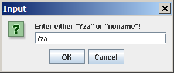
Figure-2.22: Enter search string
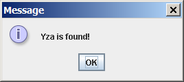
Figure-2.23: Yza is found
- Right click MyForLoopProject and
select Run.
- Enter noname which is
not one of the strings that are stored in the array. (Figure-2.24 below)
- Observe that the noname is
not found through the for loop based search. (Figure-2.25 below)
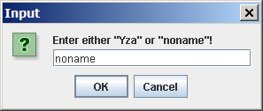
Figure-2.24: Enter search string

Figure-2.25: noname is not found
Summary
In this exercise, you learned how to use
a for loop.
return to the top
Exercise 3: while loop
In this exercise, you will learn how to
write Java programs that use while and do-while loop.
- Build and run a Java program that uses
while loop
- Build and run a Java program that uses do-while
loop
(3.1)
Build and run a Java program that uses a while loop
1. Open MyFiveNamesUsingwhileProject
NetBeans
project.
- Select File->Open Project (Ctrl+Shift+O). The Open Project dialog box appears.
- Browse down to <LAB_UNZIPPED_DIRECTORY>/javase_control/samples
directory.
- Select MyFiveNamesUsingwhileProject.
- Click Open Project.
- Observe that the MyFiveNamesUsingwhileProject
project node is displayed
under Projects pane of the
NetBeans IDE.
2. Study the FiveNamesUsingwhile.java which uses
if/else control structure,
- Expand MyFiveNamesUsingwhileProject->Source Packages-><default package>.
- Double click FiveNamesUsingwhile.java
to open it in the editor window.
- Study how for loop control structure is used, whose code fragment
is highlighted in bold font in Code-3.11 below.
import java.io.BufferedReader;
import java.io.InputStreamReader;
public class FiveNamesUsingwhile {
/**
* Creates a new instance of FiveNamesUsingwhile
*/
public FiveNamesUsingwhile() {
}
/**
* @param args the command line arguments
*/
public static void main(String[] args) {
BufferedReader reader
= new BufferedReader(new InputStreamReader(System.in));
String name = "";
int counter = 0;
//gets the users' name
try{
System.out.println("Enter name: ");
name
= reader.readLine();
}catch(Exception e){
System.out.println("Invalid input");
System.exit(0);
}
// while loop that prints the name five times
while (counter < 5){
System.out.println(name);
counter++;
}
}
}
|
Code-3.11: FiveNamesUsingwhile.java
3. Build and run the program
- Right click MyFiveNamesUsingwhileProject and
select Run.
- Observe that the program prompts you to enter your name.
- Type in your name , Sang Shin
in this example, under the line of
Enter name:
and press Enter key.
(Figure-3.12 below)
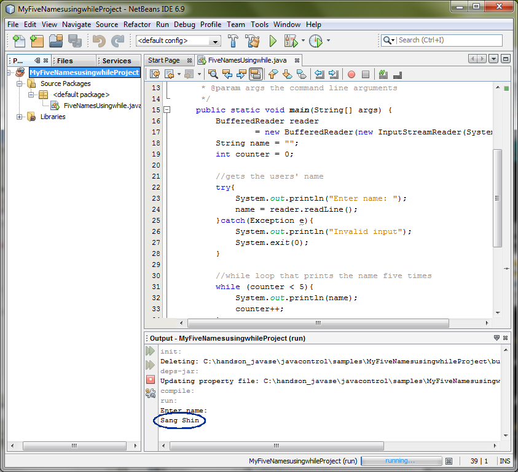
Figure-3.12: Enter your name
- Observe that the name is repeatedly displayed 5 times.
(Figure-3.13 below) You will see 6 names, the first of which is input
that is redisplayed.)
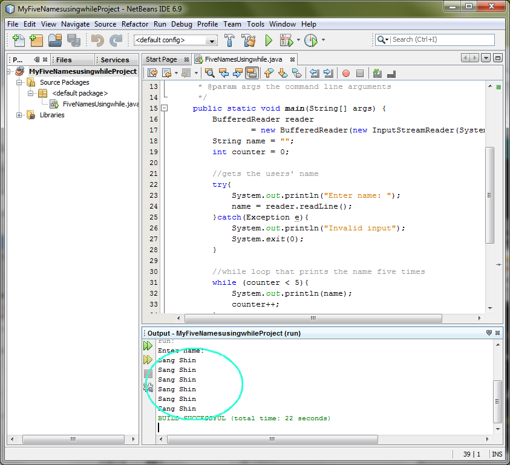
Figure-3.13: Name is repeated 5 times using while loop
return to top of
the exercise
(3.2)
Build and run a Java program that uses a do-while loop
1. Open MyFiveNamesUsingdowhileProject
NetBeans
project.
- Select File->Open Project (Ctrl+Shift+O). The Open Project dialog box appears.
- Browse down to <LAB_UNZIPPED_DIRECTORY>/javase_control/samples
directory.
- Select MyFiveNamesUsingdowhileProject.
- Click Open Project.
- Observe that the MyFiveNamesUsingdowhileProject
project node is displayed
under Projects pane of the
NetBeans IDE.
2. Study the FiveNamesUsingdowhile.java which
uses
if/else control structure,
- Expand MyFiveNamesUsingdowhileProject->Source Packages.
- Double click FiveNamesUsingdowhile.java
to open it in the editor window.
- Study how for loop control structure is used, whose code fragment
is highlighted in bold font in Code-3.21 below.
import java.io.BufferedReader;
import java.io.InputStreamReader;
public class FiveNamesUsingdowhile {
public static void main(String[] args){
BufferedReader reader
= new BufferedReader(new InputStreamReader(System.in));
String name = "";
int counter = 0;
//gets the users' name
try{
System.out.println("Enter name: ");
name
= reader.readLine();
}catch(Exception e){
System.out.println("Invalid input");
System.exit(0);
}
// Use do-while loop that prints the name
five times
do{
System.out.println(name);
counter++;
}while(counter < 5);
}
}
|
Code-3.21: FiveNamesUsingdowhile.java
3. Build and run the program
- Right click MyFiveNamesUsingdowhileProject and
select Run.
- Observe that the program prompts you to enter your name.
- Enter your name in the Input field
and press Enter key.
(Do not press Close Input.)
- Observe that the name is repeatedly displayed 6 times.
return to top of
the exercise
Summary
In this exercise, you learned how to use
while and do-while loop.
return to
the top
Homework
exercise
1. The homework is to modify the MyForLoopProject
project (Exercise 2 above) described below.
(You might want to create a
new project by copying
the MyForLoopProject
project.)
You can name the new project in any way you want but here I am going to
call to call it as MyOwnWhileProject.
- Instead
of using for loop, use while loop.
- Zip file of the
MyOwnWhileProject
NetBeans project. (Someone else
should be able to open and run it as a NetBeans project.) You can
use your favorite zip utility or you can use "jar" utility that comes
with JDK as following.
- cd <parent directory that contains MyOwnWhileProject
directory>
(assuming you named your project as MyOwnWhileProject)
- jar cvf MyOwnWhileProject.zip MyOwnWhileProject (MyOwnWhileProject should
contain nbproject directory)
- Captured output screen -
name it as javase_control.gif
or javase_control.jpg (or javase_control.<whatever
graphics format>)
- Any screen capture that shows that your program is working is
good enough. No cosmetic polishment is required.
- If you decide to use
different IDE other than NetBeans, the zip
file should contain all the files that are needed for rebuilding the
project - war file with necessary source files is OK.